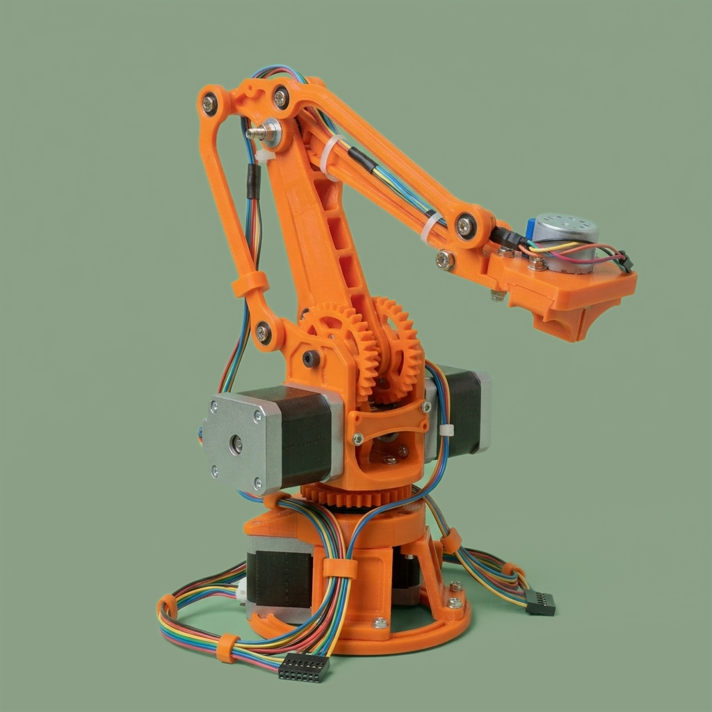
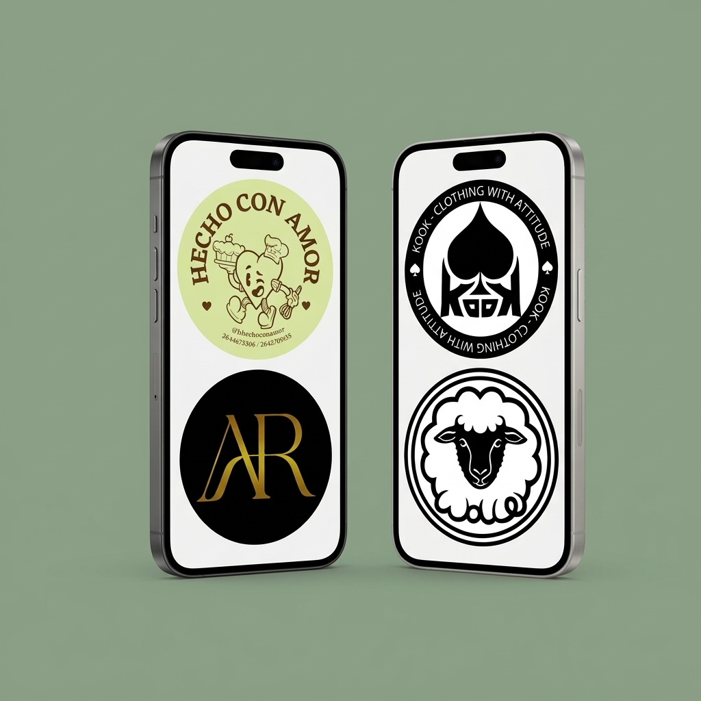

Brazo Robótico Articulado Impr. 3D & Control Embebido
« Click para leer más »
Diseño, impresión 3D y programación de un brazo robótico articulado con efector final intercambiable (electroimán y garra de precisión). Incorpora un panel de control manual personalizado (joystick/botones) para operar en tiempo real, junto con un sistema de almacenamiento de patrones que permite "grabar" secuencias de movimiento para ejecutarlas de forma automática y sistemática. Incluye pantalla para el monitoreo de rutinas y estados del sistema.

Visitar sitio
« Click para ver lista de tecnologías »
- Arduino IDE (C/C++)
- Servomotores & Electrónica Aplicada
- Modelado e impresión 3D
- Displays OLED/LCD
- Lógica de control y programación embebida
- Sistemas de actuación y efectores finales
Sistema Web de Evaluación de Trabajos de Investigación (ETI)
« Click para leer más »
Aplicación web desarrollada para automatizar la recepción, asignación por pares y evaluación de artículos para el Congreso Anual de Ecología. Implementa arquitectura POO, un algoritmo de asignación de evaluadores por área temática/cupo y una interfaz intuitiva con perfiles diferenciados para Autores, Organizadores y Evaluadores. Incluye gestión de base de datos relacional y módulo para la carga y descarga segura de documentos.
Visitar sitio
« Click para ver lista de tecnologías »
- Python
- Flask
- SQLAlchemy
- Programación Orientada a Objetos
- HTML5
- CSS3
Identidad Visual & Diseño de Marca para Emprendimientos
« Click para leer más »
Desarrollo integral de marca e imagen corporativa para diversos emprendimientos. El trabajo abarca desde la creación de logotipos, personajes e ilustraciones con estilos propios, hasta el diseño de piezas gráficas para redes sociales (flyers, historias, portadas destacadas y publicaciones para Instagram). Incluye también el desarrollo de merchandising como diseño de stickers, mockups de producto y manuales de identidad visual.

Visitar sitio
« Click para ver lista de tecnologías »
- Diseño gráfico
- Ilustración digital (Krita)
- Canva
- Vectorización
- Branding
- Mockups y composición visual